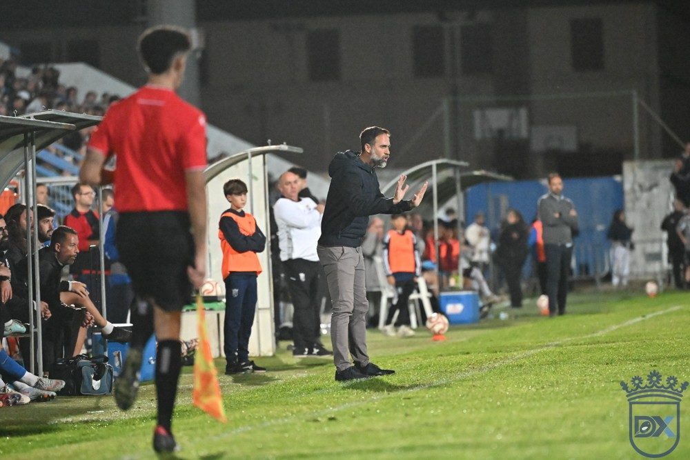

Abel Segovia pleased with the team's growth

Photo: Diario XerecistaThe Xerez CD coach called for calm after a fourth win in a row, against Antoniano (2-0). He believes the scoreline fell short and regretted Moi's first yellow card, which ended in a sending-off.
Abel Segovia played down the euphoria after the 2-0 win over Atlético Antoniano, Xerez CD's fourth in a row, which leaves the team fifth, two points off second place and three behind the leaders, Recreativo de Huelva, who have a game in hand. "The team is not going to get into that. The coach makes sure to say we must not get carried away. When we do things well we are a difficult team, but when we don't, we are an ordinary team like any other," he said at the press conference.
The coach explained that the team hurt their opponents where they had planned to: "We read the gaps between centre-back and full-back very well, as we had worked on during the week. We knew we could hurt them there and we did." Even so, he missed more cutting edge: "I think the scoreline falls short and we should have killed the game off earlier to be more comfortable." In defence, he was satisfied: "I don't remember any action of theirs that ended up on target."
Goals from every line
Asked about the goals from the midfielders, Segovia argued that scoring does not depend only on the forwards: "We create a lot in attack and in the end everyone is going to score. The centre-backs have to get forward at set pieces, and the second-line players like Mario or Isma have to chip in."
He was also asked about the change of system, from 4-4-2 to 4-3-3, and about Julito, who began the season as a second striker and now plays wider, in a position where he looks more comfortable.
Guille Campos, Rubén Mesa and fitness
The coach explained that leaving Guille Campos on the bench was a tactical decision: "Against a team in a low block we needed a full-back with different characteristics to get into very advanced positions. I'm delighted with Guille; I have 23 players and I choose depending on the opponent." On Rubén Mesa, who is getting minutes again after his physical problems, he said that "we have to go step by step with him; the important thing is that he is happy and he is going to give us a great deal."
He was also asked about playing with two right-backs, with Víctor López and Guille Campos on the pitch together. Segovia admitted that he does not like it, but that it was necessary.
On the team's improvement since the game against Betis B, Segovia insisted that, more than a physical problem, it was a mental one, and that the team has managed to work on it and improve.
Moi's sending-off
Segovia did not judge Moi's second yellow card, which left the game at ten against ten: "I'm too far away to judge whether it was a sending-off or not, but the referee sent him off and what we have to do is adapt to the new situation." He did point to the first one, before half-time: "I think we have to be smarter; the card that has penalised us was the one at the end of the first half, an action where there is no need to commit a foul and we do. We have to learn, although he has played a sensational game."
"Our ground is Chapín"
Asked whether he prefers the atmosphere at the Pedro Garrido or at Chapín, he was clear: "Our ground is Chapín." And he finished with a message of calm: "When a team is based only on results, when it loses, what does it hold on to? We hold on to work, to improving every day and to keep doing the same with complete naturalness. This is a very long road, step by step."
Read the match report of Xerez CD 2-0 Atlético Antoniano here.
🇪🇸 Leer en español ← Back to home